been hooked on gnocchi. it's cheap for 3 filling breakfasts, like 1 dollar a pop. (expensive)
we went out to 3 thrift stores yesterday. i found a scrapbook i've been wanting to store my travel goodies in, postcards, and a pin of the now-retired Maasden cruise ship. bro got two tops, a jar, and a CTR magazine print with Ape Escape on the backside. and a few Pokeymons cards between us.
we invited dad for lunch after shopping, and his choice was a sourdough sandwich and soup spot. i got a tomato bisque bread bowl and, wow! really good and filling. they seemed to like their sandwiches. expensive for 3 people but worth a try.
i proceeded to die for a few hours after coming home, but mustered up the energy to play an hour of PSO and finish the children's book i was reading, The Night Fairy. cute book with a surprising amount of action.
I forced dad to watch Howard the Duck with me the other night, so he made me watch Mars Attacks! in exchange. Much darker than I imagined, though not without its twisted humor. I'm not familiar with Atomic era sci-fi horror flicks but it seems to borrow those aesthetics and dial up the violence and cruelty.
The longest week of the year has also been the longest week of my entire life. Family trip gone awry, car troubles, last week at my first job, trying to sort out things and clean up before my flight on the 1st... I am spent. I was drawing like a beast the first few weeks of this month but fell off, instead turning to gaming to relax. Within the month I started Vermintide II, reached lvl 80 in PSO, beat Napple Tale once, Tokimeki Memorial SNES twice, and, today, nabbed the 600 and 999EVP badges for Jammin' Salmon Junction. That all means something, right?
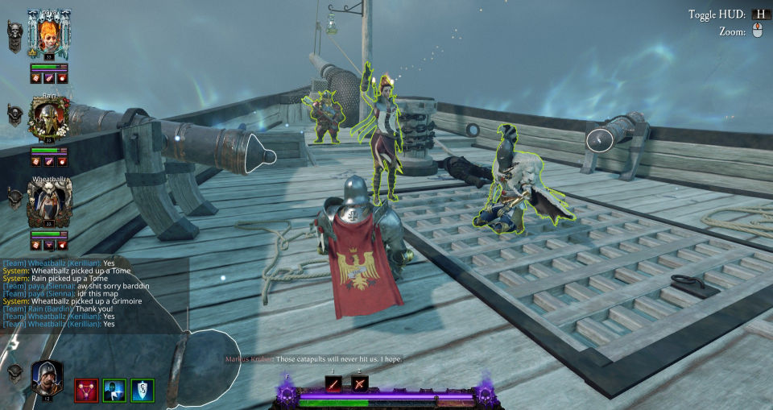
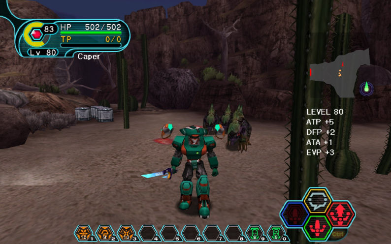
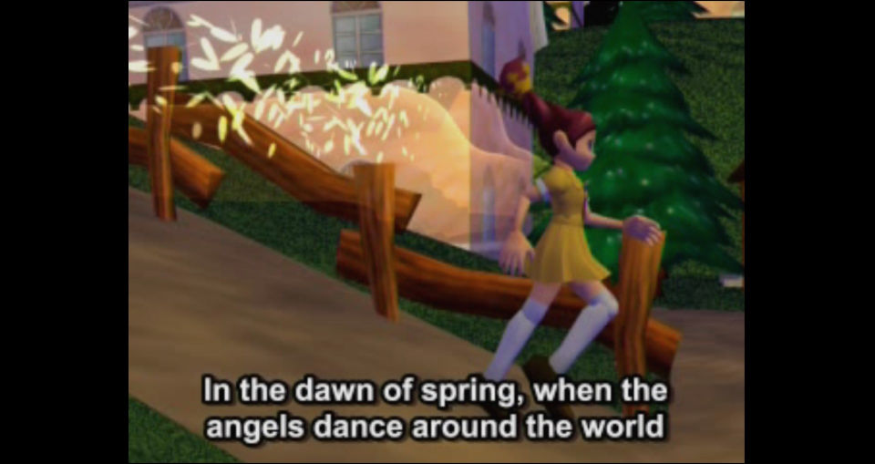
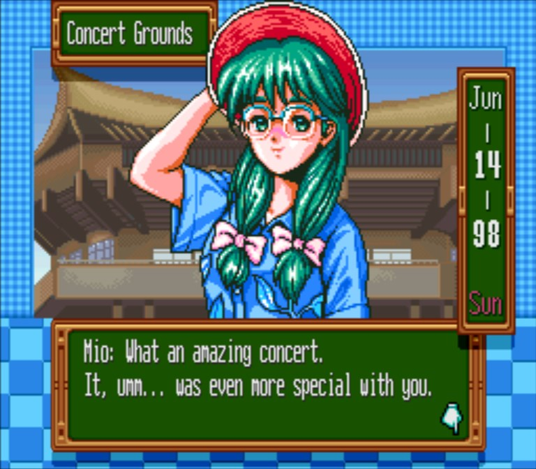
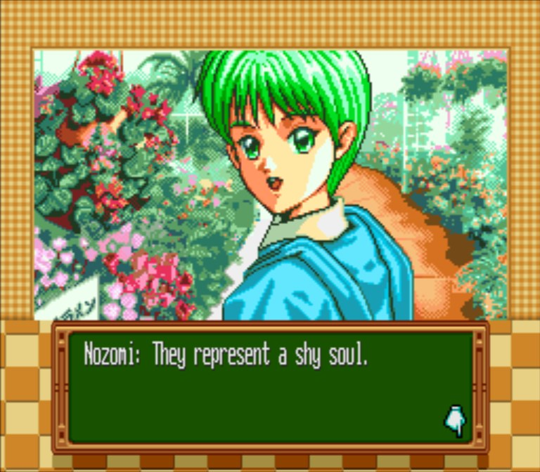
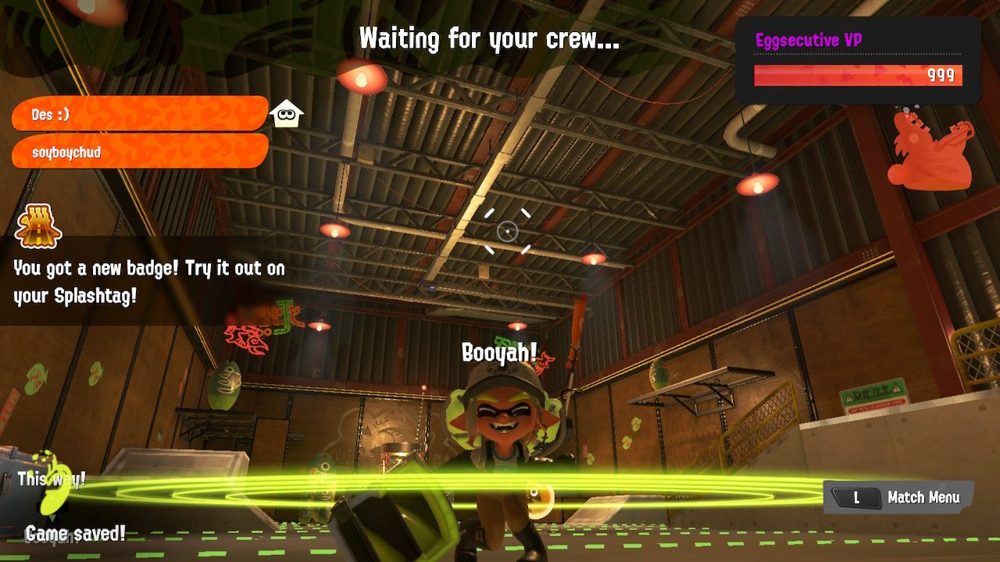
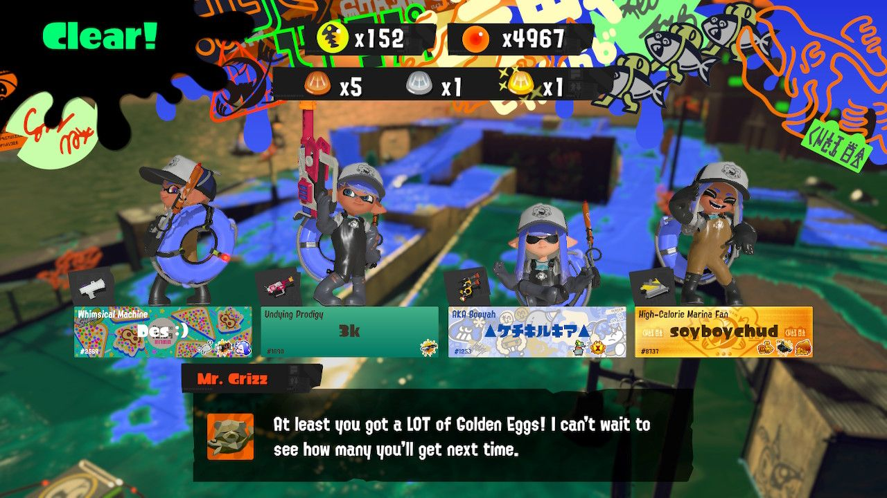
This Tip vacation's gonna be whack, we're going to TFCon in Toronto in the middle of it. I'm excited to play the new Star Fox, and in the spirit of things, am packing my copy of Star Fox Adventures for us to go through. I wish Krystal stayed the protagonist so she could be an actual character, should've locked Fox up (sexily) in the Han Solo crystal prison instead.
I don't think I'll make much progress on it while I'm out but, I'm scratching another line off my bucket list. You know when you imagine a music video in your head with characters you like?
dad and i harvested the first batch of cherry tomatoes from our plant. we believe the seed was dropped by a bird in our yard, as we never purchased a seedling. it really took off and the resulting fruits are soo sweet.
happy easter! i ate an unspeakable number of lumpias today
i'm caught up on commissions so i plan to paint this month. coincidentally i saw a fun tag called #pleinairpril. been almost a year since i had a piece in a show. would like to get into at least 1 group show for the CV.
got a Normal 1cc with 0 lives lost between us in shredder's revenge. i played leo, enjoyed the risk/reward of his charge atk
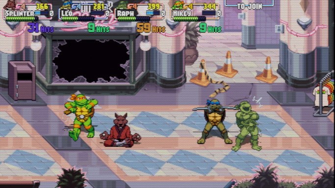
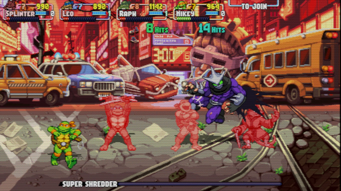
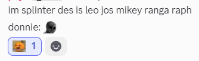
watched the Artemis II launch with la familia, got me feeling all fuzzy inside.
shredder's revenge with a full house! it was SO FUN!! my compañero paya gifted me a copy
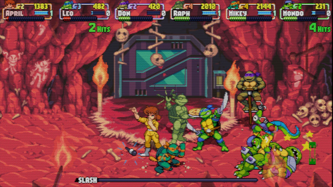
since feb i have been hooked like a mf on PSO Blue Burst. all on a whim, too: i was just jamming to its music and thought it'd be fun to play another old SEGA game. well i have a lv41 racast and fonewhearl now. this, as well as AMQ and Pokefarm, are ruining my life.
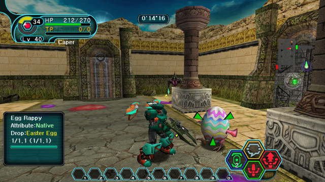
i painted two small gifts last month, one on canvas and the other on YUPO paper. despite having experience with YUPO, i found the transparent paper takes like, 8 layers for light colors to appear solid. even with a reasonable headstart (birthday deadline), that quirk had me painting down to the last minute.
another discovery with YUPO was its interaction with water-based markers. they make very smooth strokes on the surface but, if smeared at all, by another marker, paint, whatever, the pigment just gets pushed around and even stains. i had this idea that "underpainting" with bright marker colors would poke thru the acrylic paint and make some areas pop, but it became another obstacle.
i was very lazy to update last month. the site in its current state turned 4 on 1/3! i've a few ideas and unfinished projects i'm sitting on but who knows when those'll surface.
i spent the week studying the wrong material for a job assessment. luckily, both subjects shared near-identical rules and i saved a guide on the correct subject on a hunch.
goals for this month are to prepare more items in the house for donations/sale, and complete a painting.
and if i had a nickel for every Transformers yume commission i received, i'd have 4, coming on 5... this is my life now. pretty comfy.
made it to Kura Sushi for the Kirby collab rolls. i preferred the Waddle Dee roll as it's hard to top spicy salmon. the tamago blocks were a nice touch.
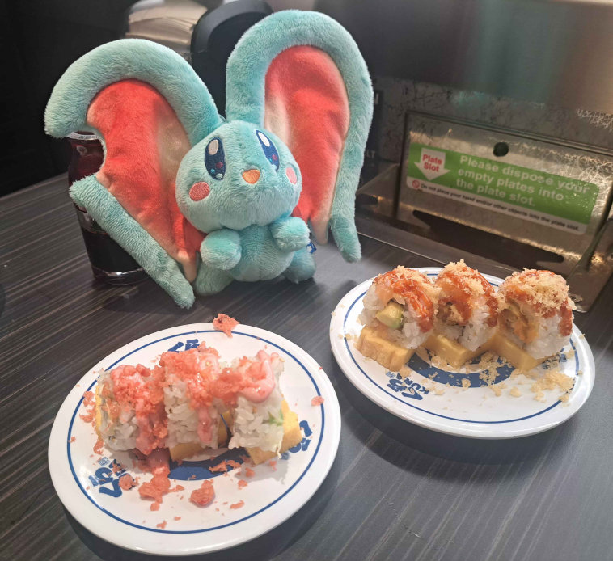
Back...